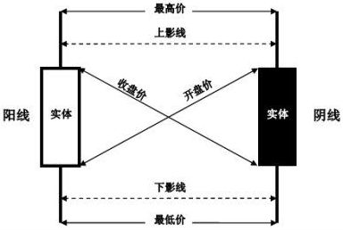
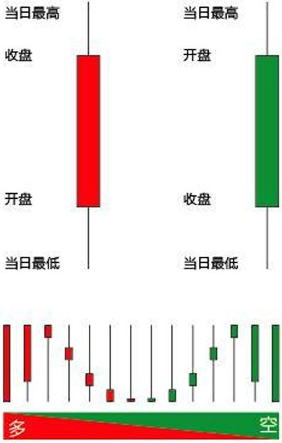

金融
K线
起源于日本德川幕府时代，最初被米市商人用来记录米市行情与价格波动。
 
- 日K线：开盘价，收盘价，最高价和最低价；
- 周K线：周一开盘价，周五收盘价，全周最高价和全周最低价；
- 月K线：一个月第一个交易日的开盘价，最后一个交易日的收盘价，全月最高价与全月最低价；
- 年K线、5分钟K线、15分钟K线、30分钟K线和60分钟K线。
| 线型名称 | 开盘价/收盘价波动范围 |
|---|---|
| 极阴线/极阳线 | <=0.5% |
| 小阴线/小阳线 | 0.6~1.5% |
| 中阴线/中阳线 | 1.6~3.5% |
| 大阴线/大阳线 | >=3.6% |
市盈率（Price Earnings ratio，即P/E ratio）
市盈率 = 股价 ÷ 每股盈利
| 市盈率范围 | 说明 |
|---|---|
| <0 | 公司盈利为负（盈利为负，计算市盈率没有意义，一般软件显示为“-”） |
| 0-13 | 价值被低估 |
| 14-20 | 正常水平 |
| 21-28 | 价值被高估 |
| 28+ | 反映股市出现投机性泡沫 |
换手率（Turnover Rate）
一定时间内市场中股票转手买卖的频率，反映股票流通性强弱的指标之一。
换手率 = (成交量 ÷ 流通总股数（手）) × 100%